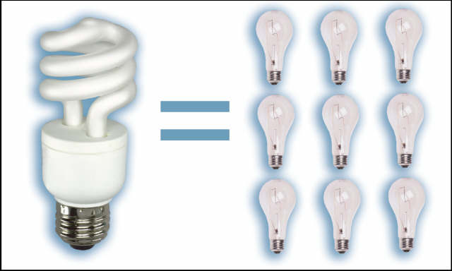

Las 3R: Reducir, Reutilizar y Reciclar
¿Qué es?
La regla de las 3R es un principio ambiental que busca disminuir los residuos mediante tres acciones: reducir, reutilizar y reciclar. Primero se evita generar desechos; después se prolonga la vida útil de los objetos, y al final se transforman los materiales en nuevos productos. Su objetivo es ahorrar recursos, energía y dinero.
También se conoce como regla de las tres erres o principio de las 3R. Aunque suele enunciarse como reducir, reciclar y reutilizar, el orden de importancia es otro: reducir va primero, reutilizar en segundo lugar y reciclar al final. Esa jerarquía es la clave de la regla, porque cada paso evita más impacto que el siguiente.
¿Cuál es el orden correcto de las 3R?
- 1. Reducir: consumir menos y elegir productos con menos empaque.
- 2. Reutilizar: dar un segundo uso a los objetos sin transformarlos.
- 3. Reciclar: convertir los residuos en materia prima para fabricar productos nuevos.
1. Reducir
Reducir significa disminuir la cantidad de productos y materiales que se consumen, sobre todo los de un solo uso. Es la R más importante porque ataca el problema en su origen: si no se compra, no se desecha.
Algunos ejemplos son comprar a granel, preferir envases grandes en lugar de varios pequeños y llevar bolsa propia al mercado. También cuenta imprimir solo lo indispensable, rechazar popotes y cubiertos desechables y planear las compras para no desperdiciar comida.

2. Reutilizar
Reutilizar consiste en volver a usar un objeto, con la misma función o con otra, sin someterlo a un proceso industrial. De esta manera se alarga su vida útil y se retrasa su llegada al bote de basura.
Por ejemplo, un frasco de vidrio puede servir para guardar alimentos y una caja de cartón, para un nuevo envío. Asimismo, la ropa, los libros y los aparatos en buen estado pueden donarse, venderse o repararse. Las botellas retornables y los contenedores rellenables son otra forma de reutilización.

3. Reciclar
Reciclar significa transformar los materiales desechados mediante procesos físicos o químicos para convertirlos nuevamente en materia prima y fabricar productos nuevos.
Algunos ejemplos son separar botellas de plástico PET, latas de aluminio, cartón, papel limpio y envases de vidrio para llevarlos a centros de acopio o contenedores especializados. Consulta aquí los tipos de reciclaje.

Pasos ordenados para separar residuos correctamente
- Identifica si el residuo es orgánico, reciclable o no reciclable.
- Vacía y enjuaga brevemente los envases de plástico, vidrio o lata.
- Aplasta las botellas PET y las cajas de cartón para reducir su volumen.
- Deposita cada material limpio en el contenedor o centro de acopio correspondiente.